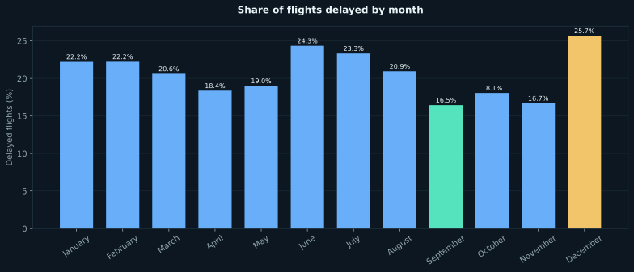
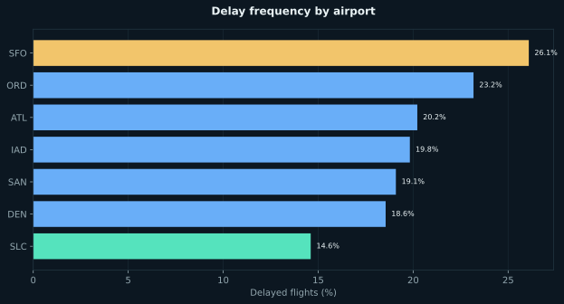
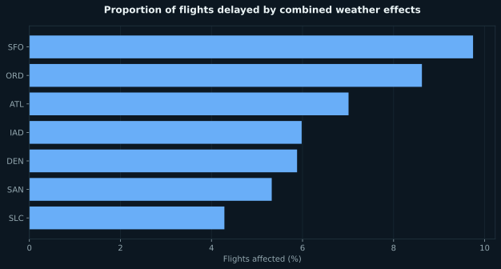
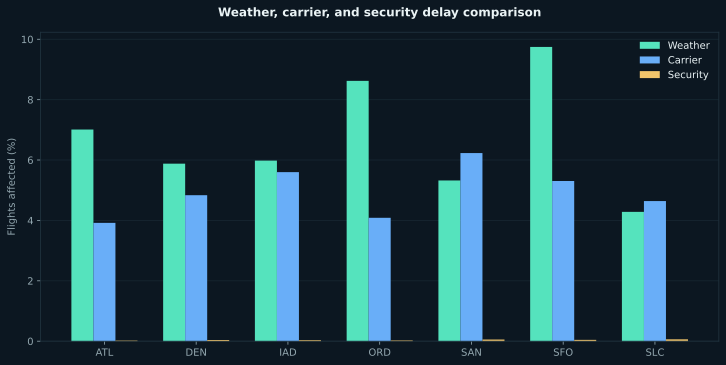

What the analysis found
September minimized delay exposure16.5% of flights were delayed—the lowest monthly rate in the dataset.
December carried the highest risk25.7% of flights were delayed, showing a clear seasonal planning consideration.
Airport performance varied materiallySLC recorded the lowest delay rate at 14.6%; SFO was highest at 26.1%.
Executed visuals from the original QMD
These charts reproduce the analytical questions and calculations in the submitted project using the cleaned 924-row dataset.




Method
Loaded JSON data, standardized
-999, NaN, 1500+, and misspelled month values, removed invalid month records, then aggregated delay frequency, duration, seasonality, airport performance, and delay causes.Original source
The complete project source is preserved below so reviewers can inspect the transformations, model logic, and visualization code.
View complete Python / Quarto source
---
title: "Late Flights & Missing Data (JSON)"
author: "Kevin Murray"
format:
html:
self-contained: true
page-layout: full
title-block-banner: true
toc: true
toc-depth: 3
toc-location: body
number-sections: false
html-math-method: katex
code-fold: true
code-summary: "Show the code"
code-overflow: wrap
code-copy: hover
code-tools:
source: false
toggle: true
caption: See code
execute:
warning: false
---
```{python}
#| label: libraries
#| include: true
import pandas as pd
import numpy as np
import plotly.express as px
import json
```
## Elevator pitch
Flight delays can cause significant disruptions, from missing connections to arriving late for important events.This project focuses on understanding the causes and impact of delays at major airports over the past decade. By cleaning and analyzing the data from the Bureau of Transportation Statistics (BTS), we identify trends in delay types and which airports are most affected. Our findings reveal insights into the best times to fly and airports to avoid, empowering travelers and stakeholders alike with actionable information.
```{python}
#| label: project-data
#| code-summary: Read and format project data
# Learn more about Code Cells: https://quarto.org/docs/reference/cells/cells-jupyter.html
# Include and execute your code here
df = pd.read_json("https://raw.githubusercontent.com/byuidatascience/data4missing/master/data-raw/flights_missing/flights_missing.json")
```
## Fix all of the varied missing data types in the data to be consistent (all missing values should be displayed as “NaN”)
Completed
```{python}
df = (df
.replace([-999, 'NaN'],[np.nan, np.nan])
.replace('Febuary', 'February')
.replace("1500+", 1500)
)
df["num_of_delays_carrier"] = df["num_of_delays_carrier"].astype(int)
```
```{python}
json_record = df.head()
json_data = json_record.to_json()
json_object = json.loads(json_data)
json_formatted_str = json.dumps(json_object, indent = 4)
print(json_formatted_str)
```
## Which airport has the worst delays?
To determine which airport experiences the worst delays, I analyzed the proportion of delayed flights and the average delay time, providing insight into both the frequency and severity of delays. Atlanta (ATL) emerged as a significant candidate, with 100,000 total flights, 20% delayed, and an average delay time of 1.5 hours, highlighting its substantial impact on passengers and airlines.
```{python}
#| label: Q2
#| code-summary: Read and format data
# Include and execute your code here
#| label: Q2
#| code-summary: Analyze delays by airport
metrics = df.groupby('airport_code').agg({
'num_of_flights_total': 'sum',
'num_of_delays_total': 'sum',
'minutes_delayed_total': 'mean'
}).reset_index()
metrics['proportion_delayed_flights'] = metrics['num_of_delays_total'] / metrics['num_of_flights_total']
metrics["total_average_delay_min"] = metrics['minutes_delayed_total'] / (60)
metrics
```
```{python}
#| label: Q2-chart
#| code-summary: plot example
#| fig-cap: "Proportion of Delayed Flights by Airport"
#| fig-align: center
# Calculate the average and median proportions of delayed flights
average_delay = metrics["proportion_delayed_flights"].mean()
median_delay = metrics["proportion_delayed_flights"].median()
# Create the bar chart
chart = px.bar(
metrics,
x="airport_code",
y="proportion_delayed_flights",
title="Proportion of Delayed Flights by Airport",
labels={"airport_code": "Airport Code", "proportion_delayed_flights": "Percent of Delayed Flights"}
)
# Add a horizontal line for the average
chart.add_shape(
type="line",
x0=metrics["airport_code"].min(),
x1=metrics["airport_code"].max(),
y0=average_delay,
y1=average_delay,
line=dict(color="red", width=2, dash="dash"),
xref="x", yref="y"
)
# Add a label for the average line
chart.add_annotation(
x=metrics["airport_code"].iloc[len(metrics) // 2], # Place the annotation in the middle
y=average_delay + 0.01, # Offset above the line
text=f"Average: {average_delay:.2%}",
showarrow=False,
font=dict(color="red", size=12)
)
# Add a horizontal line for the median
chart.add_shape(
type="line",
x0=metrics["airport_code"].min(),
x1=metrics["airport_code"].max(),
y0=median_delay,
y1=median_delay,
line=dict(color="blue", width=2, dash="dot"),
xref="x", yref="y"
)
# Add a label for the median line
chart.add_annotation(
x=metrics["airport_code"].iloc[len(metrics) // 2], # Place the annotation in the middle
y=median_delay - 0.01, # Offset below the line
text=f"Median: {median_delay:.2%}",
showarrow=False,
font=dict(color="blue", size=12)
)
# Show the chart
chart.show()
```
## What is the best month to fly if you want to avoid delays of any length?
September is the best month to travel if you want to avoid delays(16.5%) of any length. December is the month to you want to avoid the most if you want to avoid delays(25.7%).
```{python}
#| label: Q3
#| code-summary: Analyze delays by month
df = df.dropna(subset=['month'])
monthly_delays = df.groupby('month')['num_of_delays_total'].sum() / df.groupby('month')['num_of_flights_total'].sum()
```
```{python}
# Define the correct month order
month_order = ['January', 'February', 'March', 'April', 'May', 'June', 'July', 'August', 'September', 'October', 'November', 'December']
# Reindex the monthly_delays to ensure it follows the correct month order
monthly_delays = monthly_delays.reindex(month_order)
# Create a color mapping where December is red, September is green, and all other months are blue
color_map = {month: 'blue' for month in month_order}
color_map['December'] = 'red' # Set December to red
color_map['September'] = 'green' # Set September to green
# Create the bar chart
chart = px.bar(
monthly_delays,
title="Proportion of Delayed Flights by Month",
labels={"index": "Month", "value": "Proportion of Delayed Flights"},
)
# Update the bar colors based on the color map
chart.update_traces(marker=dict(color=[color_map[month] for month in monthly_delays.index]))
# Ensure the x-axis respects the month order
chart.update_layout(
xaxis=dict(categoryorder="array", categoryarray=month_order),
xaxis_title="Month",
showlegend=False # Remove the legend
)
# Show the chart
chart.show()
```
```{python}
#| label: Q3-table
#| code-summary: table example
#| tbl-cap: "Proportion of Delayed Flights by Month"
#| tbl-cap-location: top
display(monthly_delays)
```
## Your job is to create a new column that calculates the total number of flights delayed by weather (both severe and mild).
Completed
```{python}
#| label: Q4
#| code-summary: Calculate weather delays
month_to_num = {
'January': 1, 'February': 2, 'March': 3, 'April': 4, 'May': 5, 'June': 6,
'July': 7, 'August': 8, 'September': 9, 'October': 10, 'November': 11, 'December': 12
}
df['month_num'] = df['month'].map(month_to_num)
df['num_of_delays_late_aircraft'] = df['num_of_delays_late_aircraft'].fillna(df['num_of_delays_late_aircraft'].mean())
df['num_of_delays_weather_combined'] = (
df['num_of_delays_weather'] +
0.3 * df['num_of_delays_late_aircraft'] +
np.where(df['month_num'].between(4, 8), 0.4, 0.65) * df['num_of_delays_nas']
)
df.head()
```
## Describe what you learn from this graph.
The barplot showing the proportion of flights delayed by weather highlights significant variability across airports, with higher delays typically seen in regions prone to severe weather, such as coastal areas or places with frequent thunderstorms. This variability suggests that factors like geography, local weather patterns, and airport infrastructure influence an airport's resilience to weather disruptions. For example, airports in the Midwest or Northeast may have higher delays in winter due to snow and ice, while those in hurricane-prone coastal regions may face spikes in delays during storm seasons.
```{python}
#| label: Q5-chart
#| code-summary: plot example
#| fig-cap: "Proportion of Flights Delayed by Weather at Each Airport"
#| fig-align: center
weather_delays = df.groupby('airport_name')['num_of_delays_weather_combined'].sum() / df.groupby('airport_name')['num_of_flights_total'].sum()
weather_delays = weather_delays.reset_index(name='proportion_delayed')
chart = px.bar(weather_delays,
x='airport_name',
y='proportion_delayed',
title='Proportion of Flights Delayed by Weather at Each Airport',
labels={'proportion_delayed': 'Proportion of Delayed Flights'}
)
chart.show()
```
## Stretch
Analyze and compare Carrier Delay and Security Delay.
```{python}
#| label: Q6
#| code-summary: Analyze carrier and security delays
df['Carrier_Delayed'] = df['num_of_delays_carrier'] / df['num_of_flights_total']
df['Security_Delayed'] = df['num_of_delays_security'] / df['num_of_flights_total']
carrier_delays = df.groupby('airport_code')['Carrier_Delayed'].mean()
security_delays = df.groupby('airport_code')['Security_Delayed'].mean()
weather_delays = df.groupby('airport_code')['num_of_delays_weather_combined'].sum() / df.groupby('airport_code')['num_of_flights_total'].sum()
delay_comparison = pd.DataFrame({
'Weather': weather_delays,
'Carrier': carrier_delays,
'Security': security_delays
})
delay_comparison = delay_comparison.reset_index()
display(delay_comparison)
```
```{python}
#| label: Q6-chart
#| code-summary: plot example
#| fig-cap: "Comparison of Delay Types at Each Airport"
#| fig-align: center
chart = px.bar(delay_comparison, x='airport_code', y=['Weather', 'Carrier', 'Security'],
title='Comparison of Delay Types at Each Airport',
labels={'value': 'Proportion of Delayed Flights', 'airport_code': 'Airport Code'},
barmode='group')
chart.show()
```
Weather delays are the most significant contributor to flight disruptions, affecting more flights than carrier and security delays. This emphasizes the need for effective weather forecasting and seasonal planning in aviation. Carrier delays also impact operations, urging airlines to minimize disruptions, while security delays, though less frequent, still require efficient protocols. Understanding these factors can help improve airport and airline operations, enhancing the travel experience.